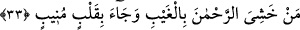

bir lafız da akla gelmeksizin, kendisine işâret edilenin müsemmâ olmasından dolayıdır.
Her ikisi de Arapça’nın kurallarındandır. Şu âyetlerde de olduğu gibi: “Güneşi
doğarken görünce de «İşte benim Rabbim! Bu daha büyük» dedi” (el-En’âm, 6/78),
“Mü’minler düşman birliklerini görünce «İşte bu Allah’ın ve Rasulü’nün bize
vaad ettiği şeydir» dediler.” (el-Ahzâb, 33/22).
et-Te’vîlâtü’n-Necmiyye’de şöyle geçer: Âyetteki “hâzâ/bu”, sıdk makamına işâret
etmektedir. Eğer cennete işâret edilmiş olsaydı “hâzihî” denilirdi.
“Ki o, Allah’a yönelen” her tevbe eden “emirlerine riâyet edenler içindir.”
“Allah’a yönelen için” ibâresi, cer harfi yine amel ettiği için “müttakiler” kelimesinin
bedelidir. Âyette geçtiği haliyle “evbe”, Allah’a rücû etmektir. Evvâb, ilk olarak şirkten
tevhide, ikinci olarak ma’siyetten tâate, üçüncü olarak da mahlûkattan Hakk’a rücû eder.
İbn Ömer (r.a.) şöyle demiştir: “Bir yere oturan kişi istiğfarda bulunmadan oradan
kalkmasın.”
Müfredât’ta ise şöyle geçer: Evvâb, tevvâb gibidir. Bu, ma’siyetleri terk etmek ve
hayırlı amelleri yapmak suretiyle Allah’a rücû eden kişidir. İşte bu yüzden tevbeye
“evbe” denilmiştir. Rücû ile evvâbın kökü olan “evb” fiili arasındaki fark, evbin bir
rücû türü olmasıdır. Bu fiil yalnızca irade sahibi canlılar için kullanılırken rücû irade
sahibi olan olmayan bütün canlılar için kullanılır.
“Hafiz”, tevbesini bozmayarak muhâfaza eden ve verdiği sözden dönmeyen kimsedir.
et-Te’vîlâtü’n-Necmiyye’de şöyle geçer: Sıdk makamı hakikatte Allah’ın müttaki
kullarına vaad edilmiştir. Evvâb, bütün ahvalinde başkasına değil yalnızca Allah’a rücû
eden, nefeslerini Allah ile birlikte tutan ve onları Allah’ın talebi dışında sarf etmeyen,
yani hiçbir nefeste Allah’tan gâfil olmayandır.
Eğer sen nefeslerine sâhip olup koruyabilirsen
Bu sebeple seni sultanlığa eriştirirler,
Her iki âlemde sana bir nasihat kâfidir,
Canından Allahsız bir nefes yükselmesin.
Sehl (r.a.) şöyle der: Evvâb, kalbiyle vesveseden Allah’ta sükûnet bulmaya rücû
eden, hafîz ise taat ve emirleri yerine getirmeyi sürdüren kişidir. Muhâsibî ise evvâbın
rabbine kalbiyle rücû eden, hafîzin de kalbini Allah’a olan rücûunu bırakıp başkalarına
rücû etmekten koruyan kimse olduğunu söylemiştir. Verrâk, hafîzin vakitlerini ve
hâtırlarını muhafaza eden yani kalbine inen hâtırları ve ilhamları koruyan kişi olduğunu
söyler. Hadis-i şerifte de şöyle buyrulur: “Gündüzün ilk vaktinde dört rekât namazı
sürekli kılan kimse evvâb ve hafîzdir.”[260]